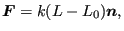
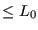
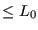

Next: One-node coupling element (DCOUP3D) Up: Element Types Previous: Two-node 3-dimensional spring (SPRING2) Contents
This is a spring element defined between two nodes (Figure 83). The force needed in node 2
to extend the spring with original length  to a final length
to a final length  is given
by:
is given
by:
|  | (19) |
where k is the spring stiffness and
 is a unit vector pointing
from node 1 to node 2. The force in node 1 is
is a unit vector pointing
from node 1 to node 2. The force in node 1 is
 . This formula
applies if the spring stiffness is constant. It is defined using the
*SPRING keyword card. Alternatively, a nonlinear spring
can be defined by providing a graph of the force versus the elongation. In
calculations in which NLGEOM is active (nonlinear geometric calculations) the
motion of nodes 1 and 2 induces a change of
. This formula
applies if the spring stiffness is constant. It is defined using the
*SPRING keyword card. Alternatively, a nonlinear spring
can be defined by providing a graph of the force versus the elongation. In
calculations in which NLGEOM is active (nonlinear geometric calculations) the
motion of nodes 1 and 2 induces a change of
 .
.
The two-node three-dimensional spring element is considered as a genuine three-dimensional element. Consequently, if it is connected to a 2D element with special restraints on the third direction (plane stress, plane strain or axisymmetric elements) the user has to take care that the third dimension does not induce rigid body motions in the spring nodes. An example of how to restrain the spring is given in test example spring4.
Note that a spring under
compression, if not properly restrained, may change its direction by
180 , leading to unexpected results. Furthermore, for nonlinear
springs, it does not make
sense to extend the force-elongation curve to negative elongation values
.
, leading to unexpected results. Furthermore, for nonlinear
springs, it does not make
sense to extend the force-elongation curve to negative elongation values
.